AI-assisted Virtual Lab Construction
The EEE 360 Virtual Lab consists of an MLAPP front end for student interaction and an SLX back end for circuit simulation. AI helped us develop the front end’s click-to-wire controls, Run and Reset workflow, progress messages, and measurement displays. It also helped us map students’ connections to the simulation model and build topology checks that point out wiring errors and guide students toward a correction. For the SLX back end, AI helped us select, connect, and configure Simscape blocks and troubleshoot simulation behavior. One example was modeling a capacitor branch that disconnects when students enter 0 µF. We tested the app and model together in MATLAB and checked the results against circuit theory.
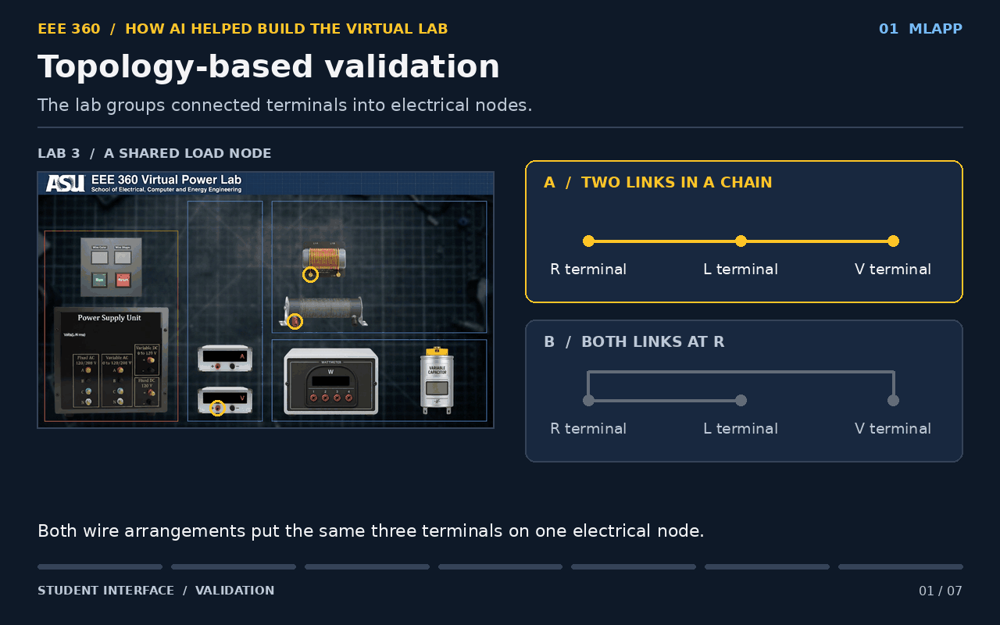
Virtual lab overview (click to view the full GIF)
AC Circuit and Power Basics
Lab 01 Introduction
This lab helps students connect Ohm’s law to a circuit they wire and measure. A variable AC supply drives a resistor. An ammeter in series and a voltmeter across the resistor show that current increases in proportion to voltage when resistance is fixed.
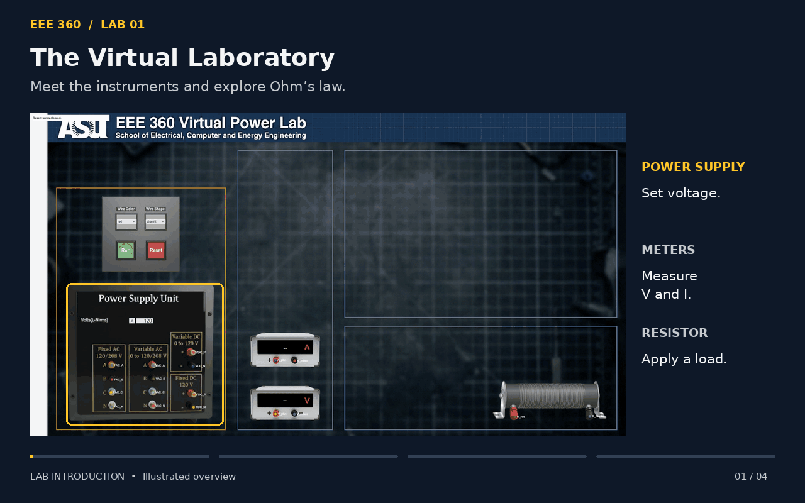
Click GIF to view full size
Lab 02 The Wattmeter
This lab helps students understand how the phase difference between voltage and current affects active power. A single-phase wattmeter measures active power for resistive and reactive loads so students can compare it with apparent power. Reversing the meter connections changes the reading’s sign.
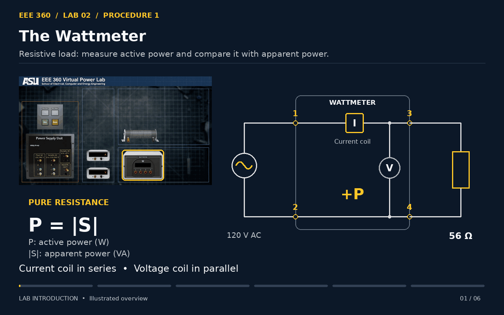
Click GIF to view full size
Lab 03 Power Factor
This lab helps students understand how reactive power lowers power factor and raises line current. A variable capacitor connected in parallel offsets the inductive load’s reactive power. Students adjust its capacitance and use an ammeter to find where line current is lowest.
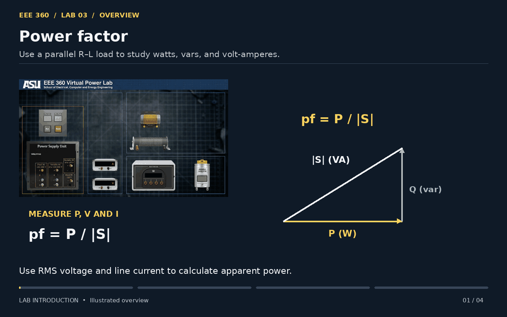
Click GIF to view full size
Three Phase Circuits and Power
Lab 04 Three-Phase Circuits
This lab helps students understand how wye and delta connections change the relationships between line and phase quantities. Students connect three load resistors to the three-phase AC supply and use voltmeters and ammeters to compare line and phase voltages and currents for each connection.
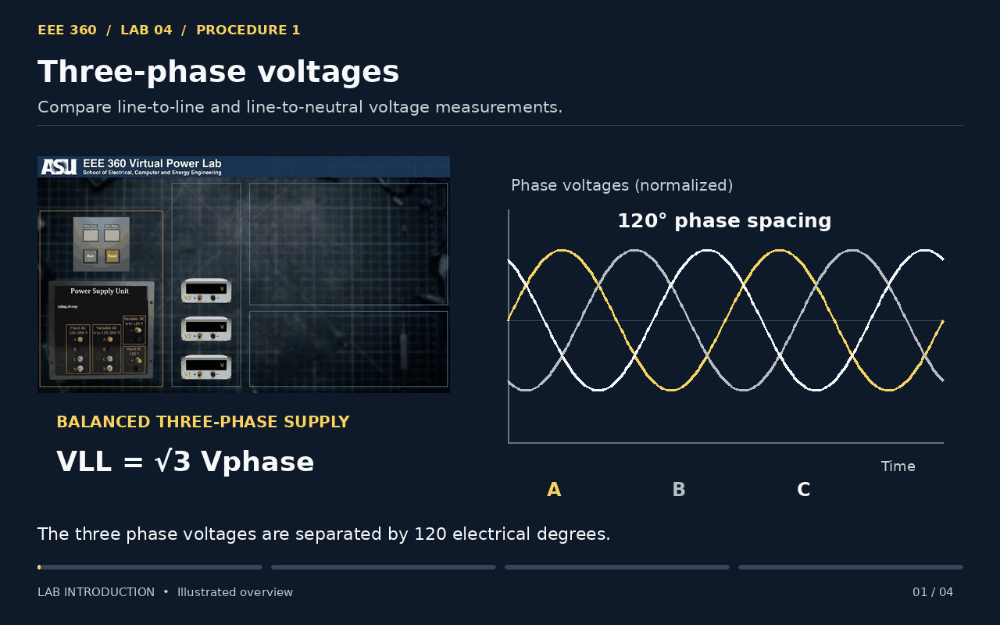
Click GIF to view full size
Lab 05 Three-Phase Power
This lab helps students understand how active and reactive power form the power triangle. Three wye-connected inductors draw reactive power. Adding a series resistor in each phase introduces active power, letting students see how apparent power and power factor change.
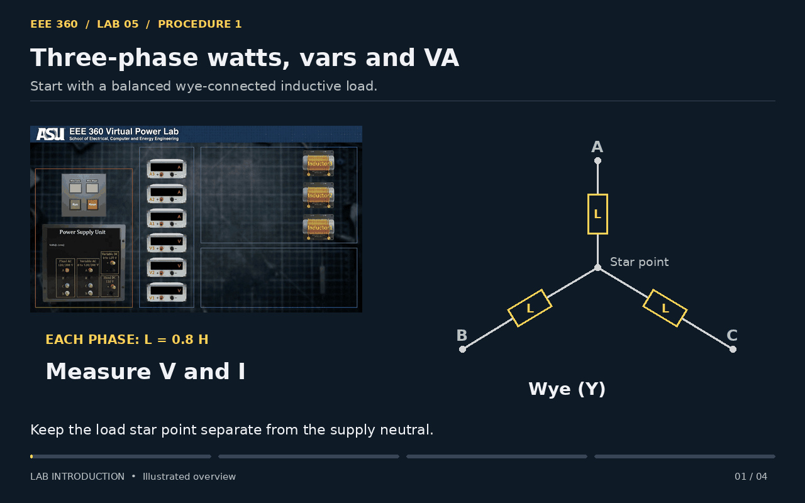
Click GIF to view full size
Lab 06 Two-Wattmeter Method
This lab helps students understand why two signed wattmeter readings give total active power in a three-phase, three-wire circuit. Students use two separate wattmeters with phase C as the voltage reference, then repeat the measurement with a prewired module.
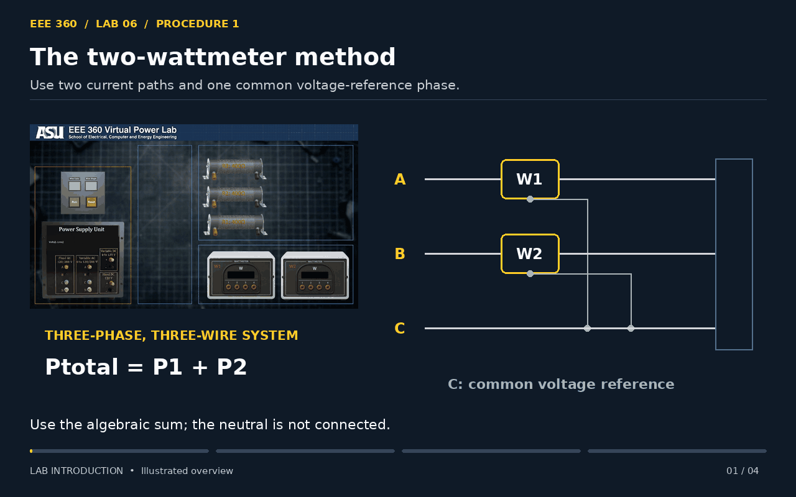
Click GIF to view full size
Magnetic Cores and Transformers
Lab 07 Ferromagnetic Core
This lab helps students understand why a transformer core’s flux density depends on its magnetization history. A current-sense resistor tracks magnetic field strength, and an LM741 integrator derives a flux-density signal from the secondary voltage. An oscilloscope plots the B–H loop in XY mode to examine remanence, coercivity, and hysteresis loss.
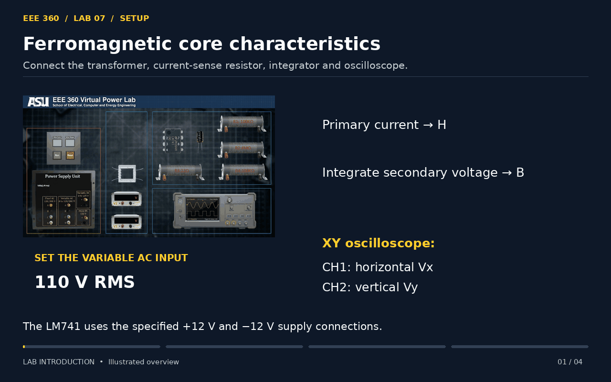
Click GIF to view full size
Lab 08 Transformer Equivalent Circuit
This lab helps students understand how the core and windings appear in a transformer equivalent circuit. A low-power wattmeter measures no-load power. Open-circuit readings identify the shunt branch, and short-circuit readings identify the series impedance.
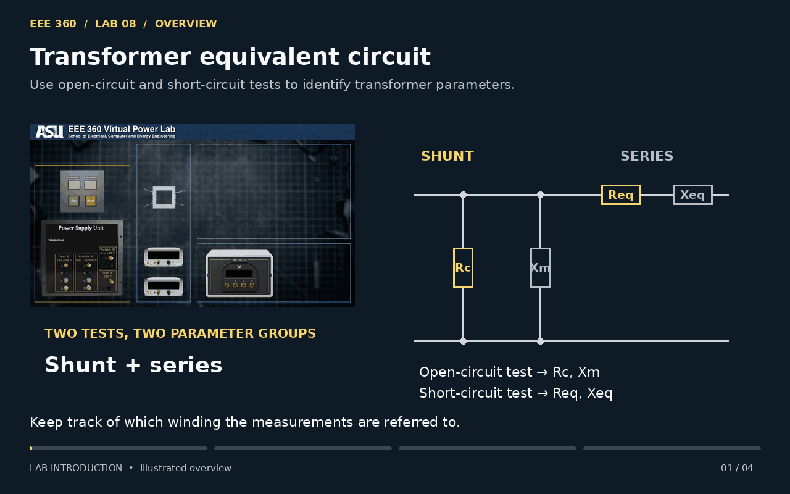
Click GIF to view full size
Lab 09 The Autotransformer
This lab helps students understand how the turns ratio sets voltage and current ratios in an autotransformer. The tap lets students use the full winding or part of it as the input. Voltmeters and ammeters compare the input and output for step-up and step-down connections.
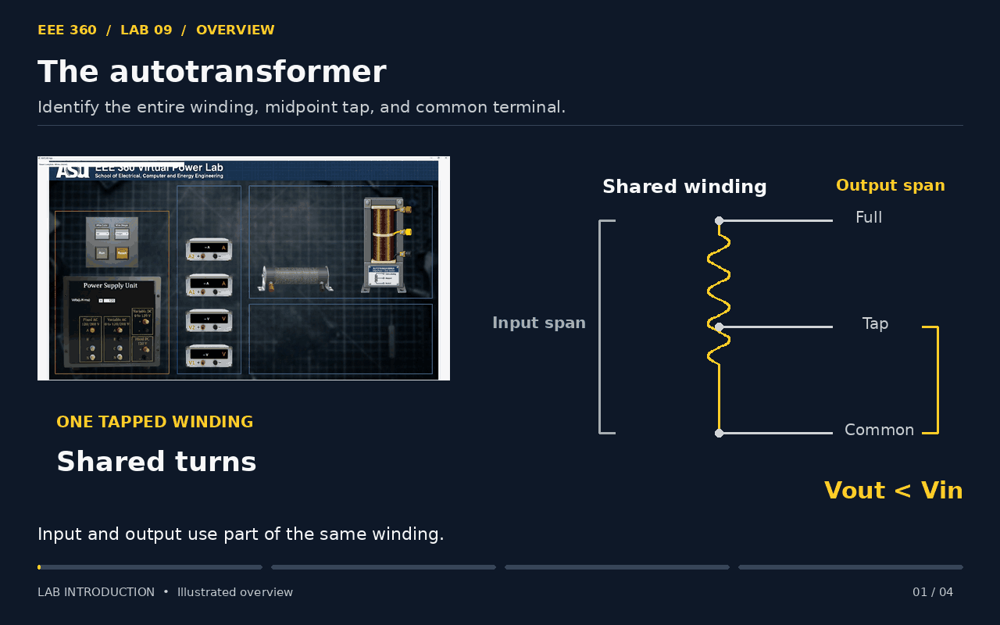
Click GIF to view full size
Synchronous Generators
Lab 10 Alternator Under Load
This lab helps students understand how load type and balance affect an alternator’s terminal voltage. A DC shunt motor drives the synchronous generator, and a tachometer monitors speed. Students compare loaded and unloaded voltages for resistive, inductive, and capacitive loads, then measure the effect of an unbalanced load.
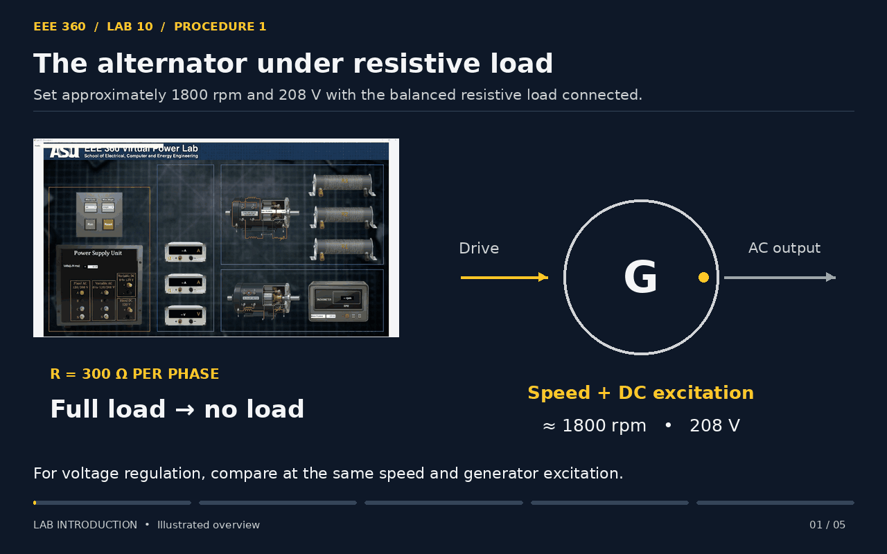
Click GIF to view full size
Lab 11 Alternator Synchronization
This lab helps students understand why voltage, frequency, phase sequence, and phase angle must match before a generator joins the grid. Voltmeters compare voltages, and a tachometer helps match frequency. The synchronizing module’s three lamps indicate phase sequence and alignment before students close the SYNC switch.
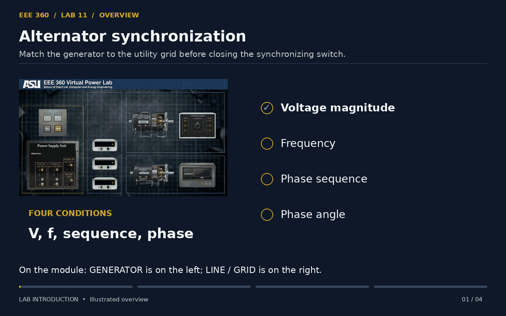
Click GIF to view full size
Lab 12 Alternator Power
This lab helps students understand why excitation mainly changes reactive power and prime mover torque mainly changes active power after synchronization. A dual wattmeter measures active power exchanged with the grid, and a DC ammeter tracks field current as students vary excitation and torque.
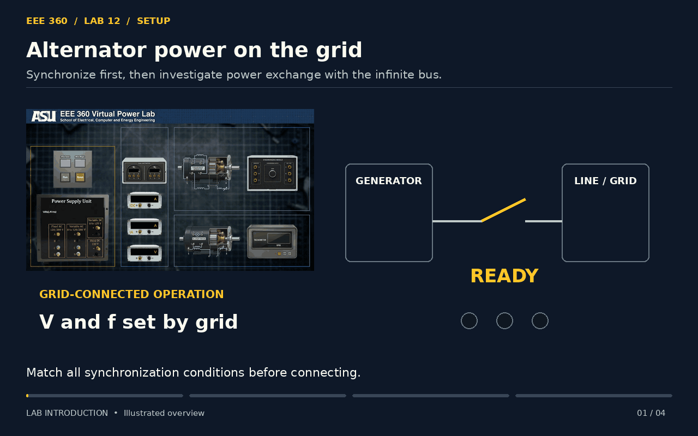
Click GIF to view full size